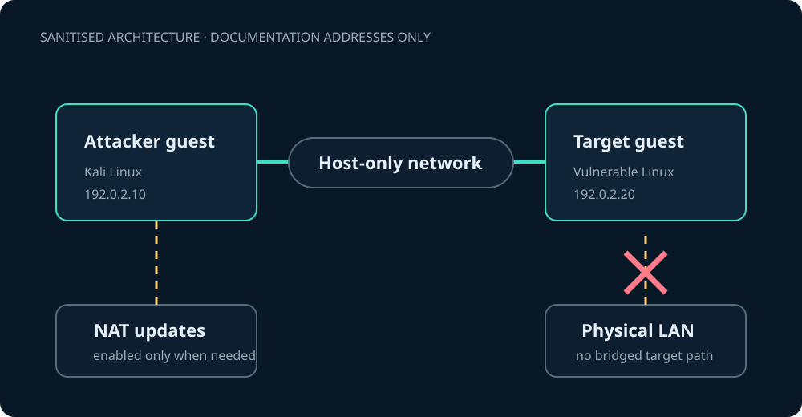

01 / Objective
Make the safe path the obvious path.
Build a reusable environment for authorised cybersecurity practice while preventing deliberately vulnerable guests from reaching the physical LAN. The design required a controlled update path, repeatable rollback, and an architecture that another reviewer could understand quickly.
02 / Environment & tools
Simple components, explicit boundaries.
- VirtualBox on a personal host
- Kali Linux attacker guest
- Intentionally vulnerable Linux target guest
- NAT for controlled updates and host-only networking for lab traffic
- Snapshots,
ip,ping, and route inspection

03 / Method
Build, verify, freeze, test.
- Create a dedicated host-only network.
- Attach attacker and target guests to that private segment.
- Keep the vulnerable target off bridged networking.
- Use NAT on the attacker only for controlled updates.
- Record clean snapshots before exercises.
- Verify addresses, routes, and guest-to-guest reachability.
- Disable the update adapter during testing.
04 / Results & evidence
A reviewable isolation model.
The final design separated host management, package updates, and intentionally hostile lab traffic. The target remained reachable from the attacker on the lab segment without being bridged to the physical network.
Evidence: validation checklist, verification script, and the sanitised diagram above.
05 / What I would improve
Automate the boundary checks.
I would add packet-capture checks at the host-only boundary and use infrastructure-as-code to reproduce the topology. A future version could use separate VLAN-backed ranges for multi-tier labs while continuing to exclude credentials, complete VM images, and raw sensitive captures.